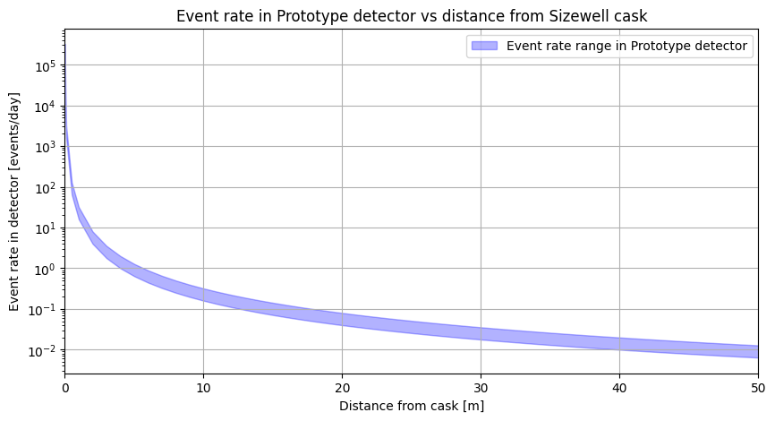
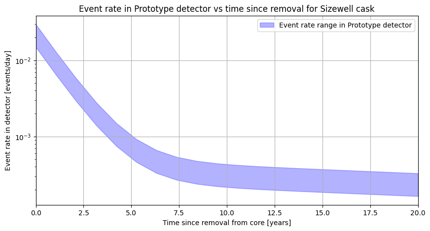

The Detector class#
As described in the introduction, the main goal of this package is to simulate the antineutrino flux emitted by spent nuclear fuel (SNF) casks. This is done using two main classes: Spectrum and Cask, which are defined in the snf_simulations.spec and snf_simulations.cask modules, respectively.
Once we’ve created a Cask object, we can use the get_total_spectrum method to create a Spectrum object representing the combined antineutrino spectrum from all isotopes in the cask:
from snf_simulations.cask import Cask
from snf_simulations.data import get_example_tbq_path
cask = Cask.from_tabqfile(get_example_tbq_path(), total_mass=10000, name='Sizewell')
print(cask)
cooling_time = 0.5 # years
total_spec = cask.get_total_spectrum(cooling_time=cooling_time)
print(total_spec)
<Cask "Sizewell": 16 isotopes, cooling time=2.738e-03 years>
<Spectrum "Sizewell": energy_range=(0.0-5313.0 keV)>
Measuring the flux at a distance#
We can get a measure for the total antineutrino flux above a given energy threshold by integrating the the total spectrum. For inverse beta decay the threshold is 1.806 MeV, so we integrate above this energy to get the total flux of antineutrinos that can be detected.
total_flux = total_spec.integrate(lower_energy=1806)
print(f"Total flux above 1.806 MeV: {total_flux:.3e} per second")
Total flux above 1.806 MeV: 2.104e+17 per second
This is the total flux emitted in all directions. To get the flux at a given distance from the cask, we can then use the calculate_flux_at_distance function from the snf_simulations.physics module, which takes the total flux and the distance as arguments. It calculates the flux using the inverse square law:
where \(F(d)\) is the flux at distance \(d\), and \(F_{tot}\) is the total flux emitted by the cask isotropically.
from snf_simulations.physics import calculate_flux_at_distance
distance = 40 # meters
flux_at_40m = calculate_flux_at_distance(total_flux, distance)
print(
f"Single 10-tonne {cask.name} cask "
f"at {distance}m after {cooling_time:.1f} years:"
)
print("Antineutrino flux:")
print(f" {flux_at_40m:.3e} per cm2 per second")
print(f" {flux_at_40m * 60 * 60 * 24:.3e} per cm2 per day")
Single 10-tonne Sizewell cask at 40m after 0.5 years:
Antineutrino flux:
1.046e+09 per cm2 per second
9.042e+13 per cm2 per day
Simulating events in a detector#
Finally, we can calculate how that flux would convert into the number of events in a simulated detector using the Detector class from the snf_simulations.detector module.
This class takes the volume of the detector and the number density of protons as arguments, as well as an optional name.
from snf_simulations.detector import Detector
detector = Detector(
volume=1.2, # in m3
proton_density=4.6e22, # in protons per cm3
name="Prototype",
)
detector
<Detector "Prototype": volume=1.200e+00 m3, proton_density=4.600e+22 protons/cm3>
It has a method calculate_event_rate which takes our cask Spectrum object and the distance to the source, and calculates the expected event rate in the detector:
event_rate = detector.calculate_event_rate(total_spec, distance=distance)
# Assume 20-40% efficiency for detection
rate_lower = event_rate * 0.2
rate_upper = event_rate * 0.4
print(f"Event rate in {detector.name} detector:")
print(f" {rate_lower:.3e} to {rate_upper:.3e} per second")
print(f" {rate_lower * 60 * 60 * 24:.3f} to {rate_upper * 60**2 * 24:.3f} per day")
Event rate in Prototype detector:
1.155e-07 to 2.311e-07 per second
0.010 to 0.020 per day
We can plot how the event rate varies with distance from the cask. Note you can pass an efficiency argument to the calculate_event_rate method (if not specified it defaults to 1).
import matplotlib.pyplot as plt
import numpy as np
# Get a range of distances
distances = np.concatenate(([0.01, 0.05, 0.1, 0.5], np.linspace(1, 50, 50)))
cooling_time = 0.5 # years
total_spec = cask.get_total_spectrum(cooling_time=cooling_time)
event_rates = []
for distance in distances:
rate_lower = detector.calculate_event_rate(total_spec, distance, efficiency=0.2)
rate_upper = detector.calculate_event_rate(total_spec, distance, efficiency=0.4)
event_rates.append((rate_lower * 60 * 60 * 24, rate_upper * 60 * 60 * 24))
event_rates = np.array(event_rates)
figure = plt.figure(figsize=(10, 5))
axes = figure.add_subplot(1, 1, 1)
axes.fill_between(
distances,
event_rates[:, 0],
event_rates[:, 1],
color="blue",
alpha=0.3,
label=f"Event rate range in {detector.name} detector",
)
axes.set_xlim(0, 50)
axes.set_xlabel("Distance from cask [m]")
axes.set_ylabel(f"Event rate in detector [events/day]")
axes.set_title(
f"Event rate in {detector.name} detector vs distance from {cask.name} cask"
)
axes.set_yscale("log")
axes.grid()
axes.legend()
plt.show()

Or we could plot how the event rate varies with time after removal from the reactor.
cooling_times = np.linspace(0, 20, 20) # years
distance = 40 # meters
event_rates = []
for cooling_time in cooling_times:
if cooling_time == 0:
# Since minimum cooling time is 24 hours, we can't ask for 0.
# Here the default will use the 24 hour time.
total_spec = cask.get_total_spectrum()
else:
total_spec = cask.get_total_spectrum(cooling_time=cooling_time)
rate_lower = detector.calculate_event_rate(total_spec, distance, efficiency=0.2)
rate_upper = detector.calculate_event_rate(total_spec, distance, efficiency=0.4)
event_rates.append((rate_lower * 60 * 60 * 24, rate_upper * 60 * 60 * 24))
event_rates = np.array(event_rates)
figure = plt.figure(figsize=(10, 5))
axes = figure.add_subplot(1, 1, 1)
axes.fill_between(
cooling_times,
event_rates[:, 0],
event_rates[:, 1],
color="blue",
alpha=0.3,
label=f"Event rate range in {detector.name} detector",
)
axes.set_xlim(0, 20)
axes.set_xlabel("Time since removal from core [years]")
axes.set_ylabel(f"Event rate in detector [events/day]")
axes.set_title(
f"Event rate in {detector.name} detector vs time since removal "
f"for {cask.name} cask"
)
axes.set_yscale("log")
axes.grid()
axes.legend()
plt.show()
